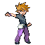

Gremio de exploradoresPrepara tu próxima expediciónSolitario o cooperativo de hasta 4 jugadoresManáLa experiencia se gana durante cada expedición
LA SENDA DE KANTOExplora, encuentra las escaleras y asciende
₽ 0Gremio

BLUEEquipo del campeón